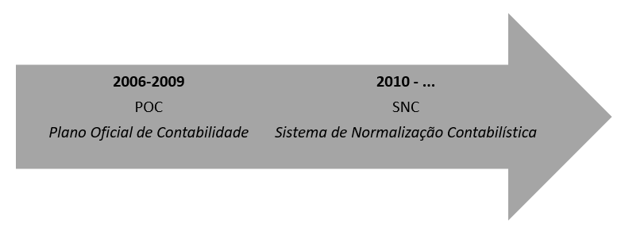

Chapter 13 Methodology
Central Balance Sheet Database provides economic and financial information on Portuguese non-financial corporations. The data is collected through Informação Empresarial Simplicada (IES) since 2006. In 2010, the national accounting standards underwent some changes, and Plano Oficial de Contabilidade (POC, National Plan of Accounts) was replaced by Sistema de Normalização Contabilística (SNC, Accounting Normalization System), which is closer to the International Accounting Standards (IAS) and International Financial Reporting Standards (IFRS). This had an impact on the base information in the Central Balance Sheet Database (Banco de Portugal, 2014).

With the introduction of SNC, some accounting items were simply redenominated, some were aggregated or disaggregated, and others have no correspondence at all in the old accounting system. The Interest income (VF16150) and Net non-current assets held for sale (VF16035) are some examples of variables that are not reported in the financial statements written according to POC. Also, the asset items in POC accounting system were reported in gross terms and the amortizations and adjustments were reported separately for each item of the Balance Sheet. The financial statement written according to SNC does not have a separate item for depreciations as POC did and all variables are being reported in net terms. Finally, SNC introduced different reporting standards for firms with different sizes. After 2010, Micro-Entities and Small-sized Entities11 were required to report a lower number of variables.
In this section, we describe the procedure to compute the harmonized variables available in the panel data of Central Balance Sheet Database. For a complete account on how each variable made available in the panel was computed, check the Description of Variables. All the calculations are done based on the annual files of Central de Balanços. Therefore, the number of firms and the time period available are the same as in the annual files. The panel dataset is updated once per year around the month of June, at the same time as the annual data of Central de Balanços. The most recent extraction occurred in June 2018.
Some variables had to be aggregated to guarantee the comparability before and after 2010. Besides, the harmonized variables can only be calculated if their components are reported for all entities according to the reporting standards adopted by the firm. Therefore, the panel dataset contains a lower number of variables than those included in the annual files. Currently we make available approximately 60 harmonized variables on the Balance Sheet and Profit and Loss Statement. In the Employment Information file, we make available 18 variables and in the Trade Information per market file, 12 variables are available. All variables in the Cover Sheet File are available given that this type of information were not affected by the accounting standards.
Table 1 – Number of Harmonized Variables by type of information
| Type of Information | Number of Harmonized Variables | Time Period |
|---|---|---|
| General Information (Cover sheet) File | 23 | 2006-2016 |
| Economic and Financial Information File | 59 | 2006-2016 |
| Employment Information File | 18 | 2006-2016 |
| Trade Information per Market File | 12 | 2006-2016 |
The harmonization procedure is different for each file described in Table 1. While the information in the Cover sheet did not suffer any significant change with the introduction of SNC, the harmonization of the Economic and Financial Information is not a straightforward task. Therefore, we classified the harmonization methodology in three different categories:
Type 1: covers the information unaffected by the change in the accounting system, which includes the Cover Sheet File. In this case, we simply append the annual datasets. The name of the variables remain the same since no change on the original data was undertaken.
Type 2: covers the information that was directly affected by the change in the accounting system, i.e., the Economic and Financial Information and Trade Information per Market. It also includes the Employment Information because the variables are collected through different tables in IES and have different denominations under POC and SNC accounting systems. For this type of files, we rely on the definition of the variables under the current accounting system (SNC) and compute a formula using the POC items needed to ensure the comparability over time. For example, the procedure to compute the item Turnover (D001) is illustrated below:
| ano | tina | planocont | VF03045 | VF03046 | VF03047 | VF16132 | D001 |
| 2006 | 500000000 | POC | . | . | . | . | 0 |
| 2007 | 500000000 | POC | 100 | 100 | 100 | . | 300 |
| 2008 | 500000000 | POC | 100 | 100 | . | . | 200 |
| 2009 | 500000000 | POC | 100 | 100 | 100 | . | 300 |
| 2010 | 500000000 | SNC | . | . | . | 100 | 100 |
| 2011 | 500000000 | SNC | . | . | . | 100 | 100 |
| 2012 | 500000000 | SNC | . | . | . | 100 | 100 |
| 2013 | 500000000 | SNC | . | . | . | 100 | 100 |
| 2014 | 500000000 | SNC | . | . | . | 100 | 100 |
| 2015 | 500000000 | SNC | . | . | . | 100 | 100 |
| 2016 | 500000000 | SNC | . | . | . | 100 | 100 |
The SNC variable - VF16132 (Turnover) - corresponds to the sum of the variables VF03045, VF03046 and VF03047 in the POC accounting system. Therefore, a new harmonized variable is computed - D001 - using these auxiliary variables. After calculating the harmonized variable, the auxiliary variables are dropped and only the variables in bold are kept in the dataset. All missing values in the auxiliary variables are treated as zeros. The report of IES is mandatory for all firms that are required to send the financial statements to the Ministry of Finance. Therefore, all items have to be completed in a consistent manner so that the firm is able to submit the declaration. Therefore, the real value of a specific variable is assumed to be zero if it is not reported. The naming convention for Balance Sheet variables in the panel data is B(L)xxx, for Profit and Loss Statement is D(L)xxx, for Employment Information is Exxx and for Trade Information per Market is MGxxx.
After identifying all variables that can be potentially included in the panel dataset, we produced and analyzed technical reports on each variable. Namely, we did the following checks to ensure the compatibility of the panel variables over time:
- analyze the evolution of the mean and medium values of the relative changes over time.12 We try to identify whether there is any discontinuity in 2010, the first year in which most of the firms reported under Sistema de Normalização Contabilística.13
- check whether abnormal relative changes (relative changes above 100%) are found more often in the transition to the new accounting system.
- decomposition of the yearly variation of the total value of each variable due to the expansion and contraction of incumbents and the entry and exit of firms.
- regression of each variable on time dummies to detect any structural change in the variable after 2010.
The link to the report on each variable is available in the section Description of Variables. The harmonization procedure tries to ensure the compatibility of the variable over time as much as possible. However, as one can see in the variable reports, some harmonized variables show a clear discontinuity in 2010.
We also produce a report checking whether the sum of disaggregated variables corresponds to the aggregated variables.
- Type 3: covers the Economic and Financial Indicators files containing information affected by the change in the accounting system. The information on this file is calculated using the variables available in the Economic and Financial Information File. We provide a Stata ado file to compute all the economic and financial indicators that are possible to harmonize over time given the information available in the panel dataset. By adopting this procedure, the size of the dataset is minimized. All indicators variables calculated by this ado are denominated Rxxx.
A Micro-Entity is defined as a firm that falls below in at least two of the following criteria at the balance sheet date: i) total assets equal to 500.000 euros; ii) net turnover equal to 500.000 euros; or iii) average number of employees equal to 5. Small-sized Entities are firms satisfying at least two of the following conditions: i) total assets below 500.000 euros; ii) total gross sales and other income lower than 1.000.000 euros or; iii) average number of employees less than 20. For more details please check the manual on Central Balance Sheet Database - Annual Data.↩
The relative changes are defined as the difference between the value of the variable observed in year t minus the value observed in the previous year. Relative changes are computed with respect to the average of year t and t-1 and are measured in percentage.↩
In 2010 some declarations were reported according to Plano Oficial de Contas. This situation occurs mostly for declarations sent in the cessation period and before or after the firms adopts a special fiscal period - a fiscal period different from calendar year.↩